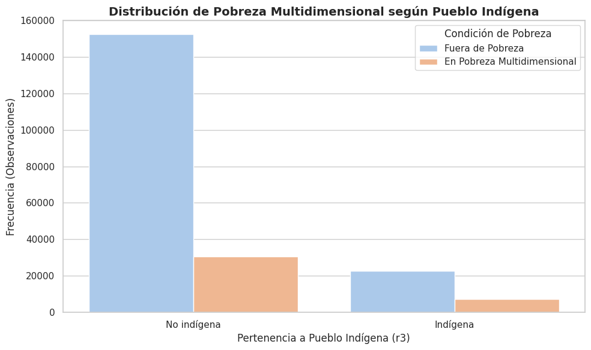

Por qué Casen
La encuesta Casen es diseñada y coordinada por el Ministerio de Desarrollo Social y Familia, a través de su observatorio social, con el objetivo de medir la pobreza, la pobreza multidimensional y la desigualdad en Chile. A través de este instrumento, el Estado recolecta datos sobre las condiciones socioeconómicas de la población en áreas críticas como salud, trabajo, educación y vivienda para el diseño de políticas públicas.
Los datos de este dataset corresponden a la encuesta 2024, implementada entre fines de ese año e inicios de 2025. La muestra abarca 78.654 hogares distribuidos en todas las regiones del país, buscando representatividad nacional tanto en zonas urbanas como rurales (Ministerio de Desarrollo Social y Familia [MDSF], 2026).
Pobreza multidimensional según pertenencia a pueblos indígenas

Qué muestra el gráfico
El tercero analiza el cruce entre la pertenencia a pueblos originarios y la pobreza multidimensional. La visualización nos permite observar que la gran mayoría de la muestra se concentra en la categoría de población no indígena, esta cuenta con altos volúmenes fuera de la pobreza y una proporción menor en situación de carencia, mientras que el segmento de población indígena muestra una distribución donde las proporciones de pobreza se mantienen presentes de manera significativa respecto al total de su grupo registrado.
Conclusión
CASEN cumple solo en parte con el enfoque de derechos humanos para los datos (United Nations Office of the High Commissioner for Human Rights [OHCHR], 2018). Tiene un buen estándar de transparencia, cumple a medias cuatro principios (desagregación, autoidentificación, privacidad y rendición de cuentas) y no cumple el de participación.
El análisis completo está en el notebook del Taller sumativo 4.
Referencias
Ministerio de Desarrollo Social y Familia. (2026). Ficha técnica Casen 2024. División Observatorio Social. https://observatorio.ministeriodesarrollosocial.gob.cl/storage/docs/casen/2024/Ficha_tecnica_Casen_2024.pdf
United Nations Office of the High Commissioner for Human Rights. (2018). A human rights-based approach to data: Leaving no one behind in the 2030 agenda for sustainable development. https://www.ohchr.org/en/documents/tools-and-resources/human-rights-based-approach-data-leaving-no-one-behind-2030-agenda